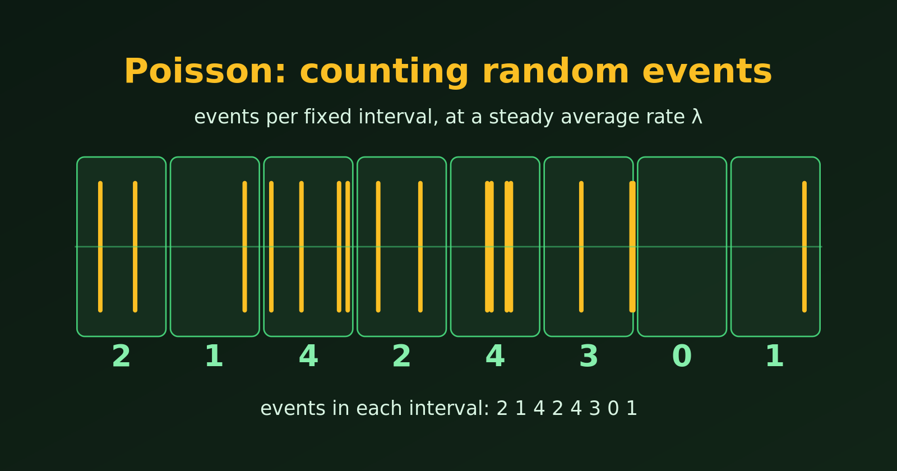
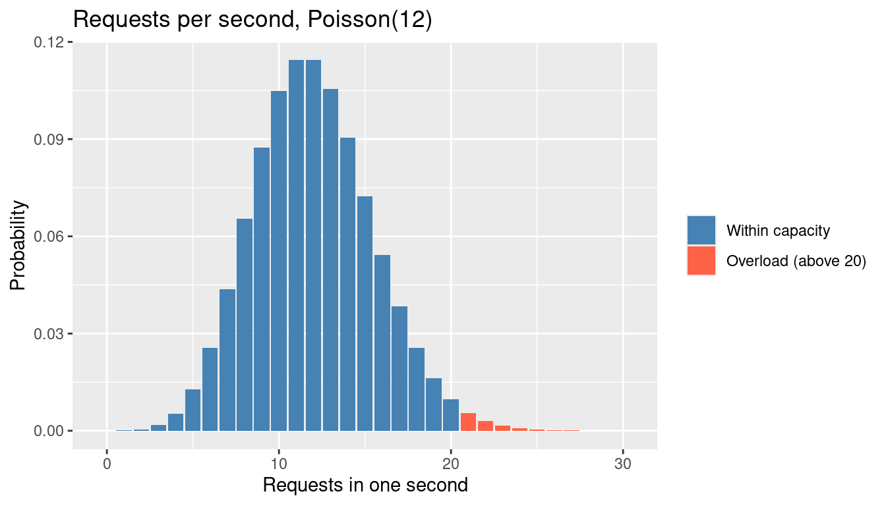
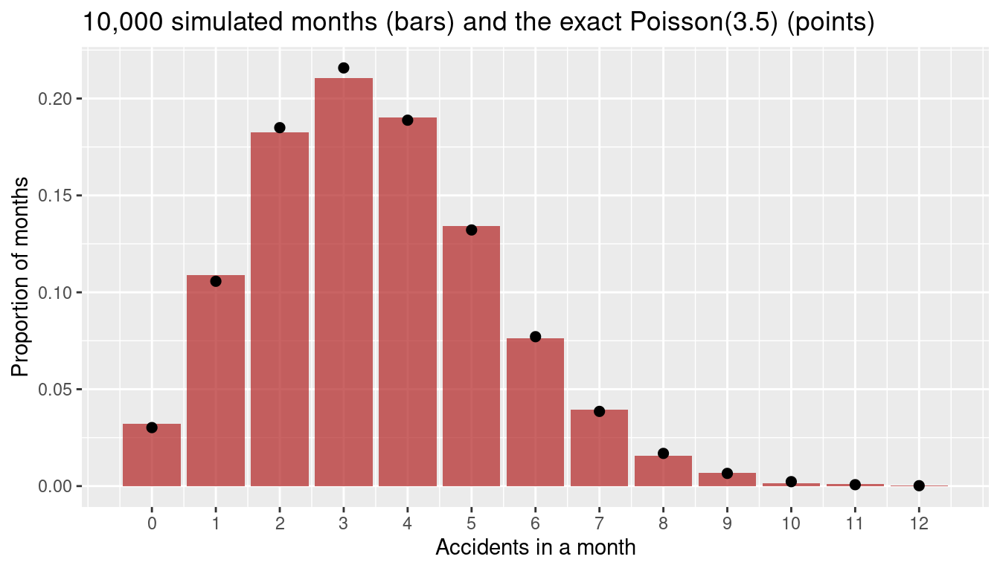

library(tidyverse)
lambda <- 12
traffic <- tibble(requests = 0:30, prob = dpois(requests, lambda)) %>%
mutate(overload = requests > 20)
# probability of more than 20 requests in one second
ppois(20, lambda, lower.tail = FALSE)[1] 0.01159774Abdullah Al Mahmud
November 4, 2026

Many real situations ask the same question: how many times will something happen in a fixed stretch of time or space? How many requests hit a server this second? How many accidents happen at a junction this month? How many customers walk in this hour? The Poisson distribution is the standard model for such counts. Let’s see where it is used, and then why it fits.
The recipe is always the same: events happen at random, at a steady average rate \(\lambda\), and we count them in a fixed interval. The probability of seeing exactly \(x\) events is
\[ P(X = x) = \frac{e^{-\lambda} \lambda^x}{x!}, \qquad x = 0, 1, 2, \dots \]
| Field | What we count | Interval |
|---|---|---|
| Web and IT | requests to a server, failed logins | per second, per minute |
| Customer service | calls to a call centre, customers at a till | per hour |
| Health | patients arriving at an emergency department | per hour, per night |
| Insurance and safety | accidents, claims, machine breakdowns | per month, per year |
| Quality control | defects in a roll of fabric, typos in a book | per metre, per page |
| Science | radioactive decays, stars in a patch of sky | per second, per area |
| Ecology | plants or animals in a quadrat | per square metre |
| Sport | goals in a football match | per match |
Let’s look at three of these in detail, with R.
Scenario. A server receives on average \(\lambda = 12\) requests per second. Engineers must decide how many requests it should handle per second. How often would a capacity of 20 requests per second be exceeded?
[1] 0.01159774ggplot(traffic, aes(requests, prob, fill = overload)) +
geom_col() +
scale_fill_manual(values = c("FALSE" = "steelblue", "TRUE" = "tomato"),
labels = c("Within capacity", "Overload (above 20)")) +
labs(title = "Requests per second, Poisson(12)",
x = "Requests in one second", y = "Probability", fill = NULL)
An overload is rare in any one second, but a server handles thousands of seconds a day, so even a small probability matters. The Poisson model lets us compute it from the average rate alone.
Scenario. A junction averages \(\lambda = 3.5\) accidents per month. An insurer wants the probability of a month with no accidents, and of a very bad month with 8 or more.
no_accident eight_or_more
0.03019738 0.02673892 We can also simulate ten thousand months and check that the simulation agrees with the formula.
[1] 0.0323months %>%
count(accidents) %>%
mutate(simulated = n / sum(n), exact = dpois(accidents, lambda)) %>%
ggplot(aes(accidents)) +
geom_col(aes(y = simulated), fill = "firebrick", alpha = 0.7) +
geom_point(aes(y = exact), size = 2) +
scale_x_continuous(breaks = 0:12) +
labs(title = "10,000 simulated months (bars) and the exact Poisson(3.5) (points)",
x = "Accidents in a month", y = "Proportion of months")
The Poisson distribution works in space as well as in time. Suppose we count orchids in 15 quadrats of one square metre each.
[1] 1.533333[1] 1.409524# A tibble: 5 × 3
orchids observed expected
<int> <int> <dbl>
1 0 3 3.2
2 1 5 5
3 2 4 3.8
4 3 2 1.9
5 4 1 0.7If the plants are scattered completely at random, the counts per quadrat follow a Poisson distribution, so the variance is close to the mean. If they cluster, the variance is much larger than the mean. Here the two are close, and the observed counts are near the expected ones, so these orchids look randomly scattered. (With only 15 quadrats this is a rough check, not a proof.)
The Poisson distribution is a good model when:
What follows from these conditions:
The “memoryless” property that is sometimes mentioned belongs to the waiting time between events, which follows the exponential distribution, and not to the Poisson count itself. If events occur as a Poisson process, the wait until the next event does not depend on how long we have already waited.
Here is the check in practice. For real Poisson data the variance is close to the mean, and for clustered data it is not.
mean variance
4.018000 4.057734 mean variance
4.11400 19.92092 The first pair is close, which supports a Poisson model. The second has a variance several times the mean, so a Poisson model would underestimate how variable the counts are.
Related: for large \(\lambda\) the Poisson looks like a normal curve, see Normal Approximation to the Poisson Distribution.